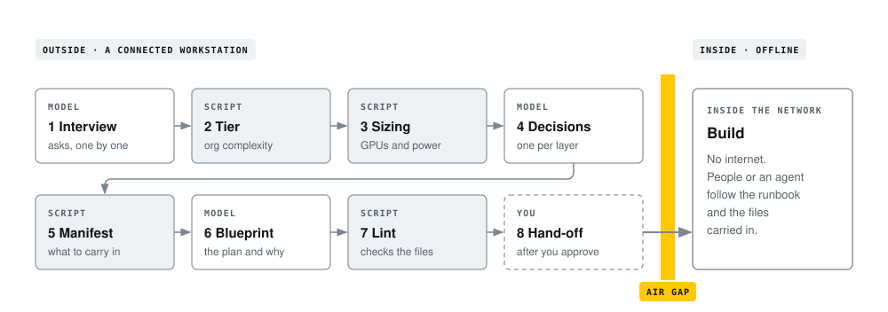
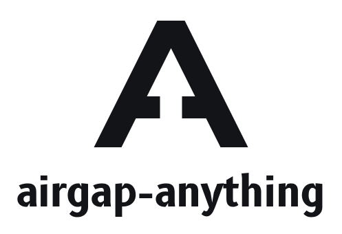
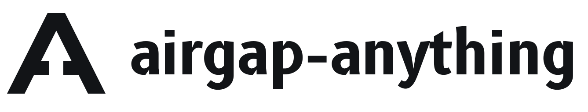
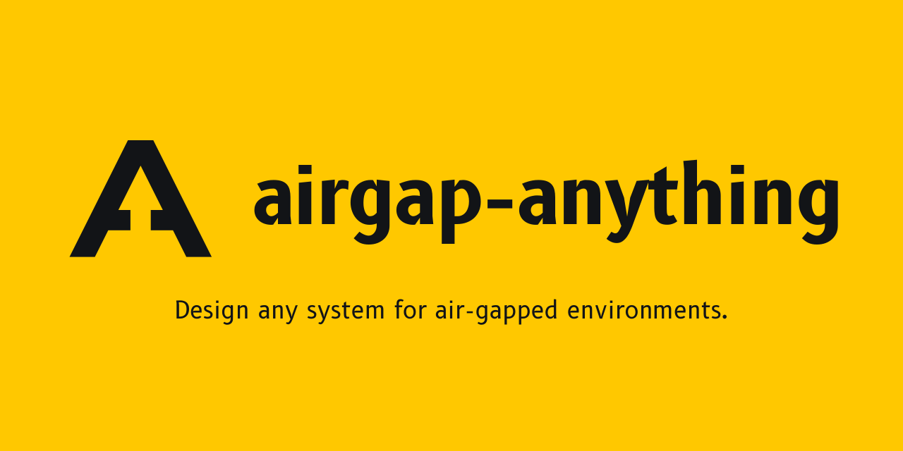
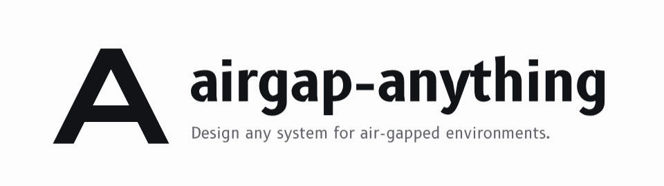
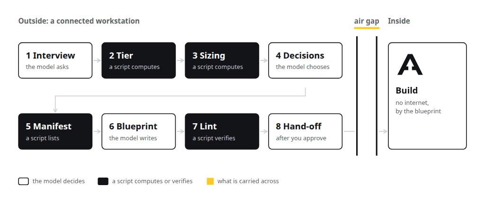

airgap-anything görsel önizleme
Görseller README'de görüneceği gibi resim olarak yükleniyor; animasyonlar döngü halinde oynar. Logo, renk ve yazı tipi 21 Kasım 2026'da onaylandı.
1. README başlığı, açık tema

2. README başlığı, koyu tema

3. Akış diyagramı, açık tema

4. Akış diyagramı, koyu tema

README akış diyagramı: aynı şeffaf dosya, açık ve koyu sayfada

5. Sembol, simge ve yerleşimler
Animasyonlu sembol (A, ∀ olur)
Simge ve avatar
Animasyonlu simge (README başlığı)

6. Yatay yerleşim

7. Sosyal önizleme (GitHub paylaşım görseli)

8. Yedekler: GIF (wiki gibi SVG oynatmayan yerler için)


9. Favicon ve web simgeleri
16 piksel
32 piksel
Uygulama simgesi